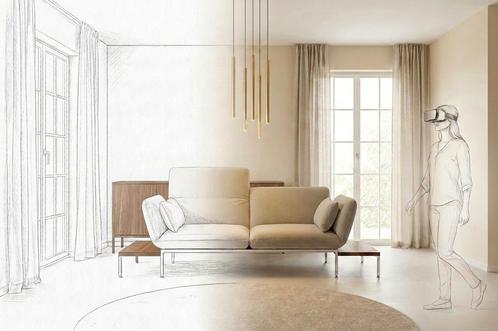

Sofa & Co. · Startbild · überarbeitet nach Andreas Feedback
Neues Startbild — roro ohne Kopfstützen, mit Sideboard
So sieht die Vorlage fürs neue Video aus. Aus diesem Bild wird dann wieder das 30-Sekunden-Video (Verwandlung + VR-Erlebnis).

Umgesetzt nach Andreas Rückmeldung:
- ✓ roro in normaler Sitzstellung (beide Lehnen aufrecht), mit Chrom-Holz-Unterbau
- ✓ Sideboard im Hintergrund ergänzt (wohnlicher)
- ✓ Goldene Pendelleuchten unverändert gelassen